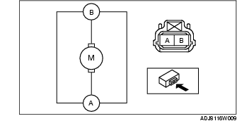

Washer motor inspection
1. Connect battery positive voltage to the motor terminal A and ground to the motor terminal B.

2. Verify that the washer fluid flows through the windshield washer hose.
3. Connect battery positive voltage to the motor terminal B and ground to the motor terminal A.

4. Verify that the washer fluid flows through the rear washer hose.